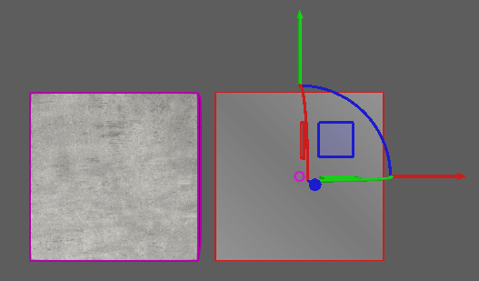
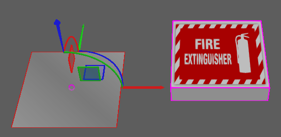
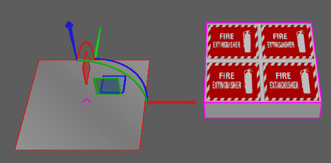
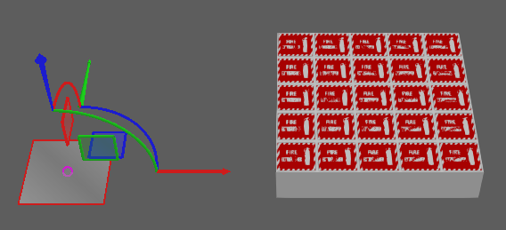
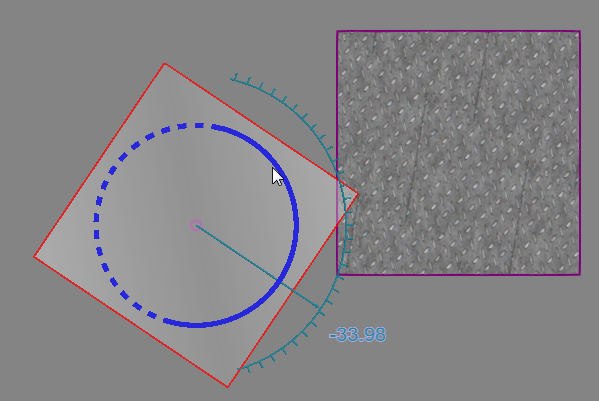

Assigning Texture Coordinates
Texture coordinates can be assigned to geometry by using a mapping tool for spherical, cylindrical and planar projections. This allows you to map the texture of material to objects in the 3D world.
- On the Modeling tab, in the Geometry group, click the Tools arrow, and then under Material, click Mapping.
- In the Texture Mapping task pane, do all of the following:
- Under Mode, select a type of projection.
- Under Set Texture Mapping For, select the type of object you want to assign texture coordinates.
- In the 3D world, click an object to assign it texture coordinates. If the current material of the object does not have a texture, a temporary texture will be displayed and projected on the object in the 3D world. In any case, you should be able to visualize how a texture will be applied to the surface of a selected object based on its material.
- Do one or more of the following:
- To move the projection on the selected object, either use the Move tool in the 3D world or edit the location in the Texture Mapping task pane. In either case, you are moving the projection not the object.

- To edit the size of the projection, in the Texture Mapping task pane, under Projection Setting, set Width and Height. This defines the size of the UV space before tiling the texture.

- To edit the scale of each tile in the projection, in the Texture Mapping task pane, under Projection Setting, set U Tiling and V Tiling. The scale of each tile is related to the size of its UV space, for example Width/U Tiling and Height/V Tiling.

- In the Texture Mapping task pane, do one of the following:
- To confirm the mapping and save all changes, click Close.
- To cancel the mapping and undo all changes, click Cancel.
- To make changes to the current mapping, go back to Step 2.
- To assign texture coordinates to other objects, go back to Step 2 and then select a different object.
Example. Mapping texture to surface with one UV tile

Example. Mapping texture to surface with multiple UV tiles

Example. Mapping texture to surface with smaller UV space and multiple UV tiles

Example. Mapping texture with bumps to surface
